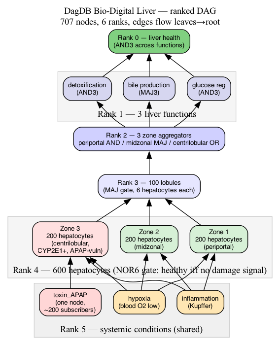
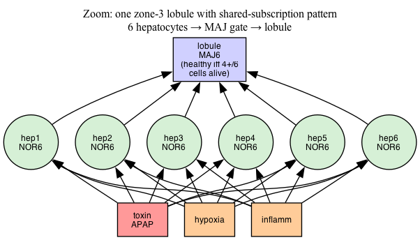

Pressure-testing a 6-bounded ranked DAG on real physiology — properties as nodes, zone-specific cascades, graceful degradation.
A scientific tool for a scientific purpose.
Every node has at most 6 incoming edges. Forces hierarchical trees over fan-out stars.
Nodes layered by rank. Edges flow leaves → root, enforced by the daemon at CONNECT time.
A property value is a node, not a column. Many entities subscribe; one LUT flip drives population-level change.
Hepatic microarchitecture isn't abstract. Cells touch at most 6 neighbours. Lobules tile into zones. Zones aggregate into functions. Functions feed into organ health.
The constraint DagDB imposes on graphs is the constraint biology already imposes on tissue.
Chess with the galaxy is unwinnable.
Chess with a champion is exactly what DagDB is shaped for.

| Rank | Count | Role | Gate |
|---|---|---|---|
| 5 | 3 | systemic conditions (shared) | CONST0/1 |
| 4 | 600 | hepatocytes (parenchymal) | NOR6 |
| 3 | 100 | lobules | MAJ6 |
| 2 | 3 | zones (periportal / midzonal / centrilobular) | AND6 / MAJ6 / OR6 |
| 1 | 3 | liver functions (detox / bile / glucose) | AND3 / MAJ3 / AND3 |
| 0 | 1 | liver health root | AND3 |
Zone-specificity encoded in the subscription pattern: zone 3 cells have an incoming edge from
toxin_APAP, zones 1–2 don't. The edge topology IS the metabolism map.
In a classical property-bag graph DB, every hepatocyte would store
its own has_APAP boolean — 600 writes to flip them all.
In DagDB, toxin_APAP is a single node. Zone 3 cells
have an incoming edge from it. Flipping one LUT propagates to
all 200 subscribers in the next tick.

| Rank | Firing | Total | State |
|---|---|---|---|
| r0 root | 1 | 1 | ● ALIVE |
| r1 functions | 3 | 3 | ● ALIVE |
| r2 zones | 3 | 3 | ● ALIVE |
| r3 lobules | 100 | 100 | ● ALIVE |
| r4 hepatocytes | 600 | 600 | ● ALIVE |
| r5 systemic | 0 | 3 | all signals off |
NOR6 semantics: every hepatocyte fires TRUE unless any subscribed damage signal fires.
| Rank | Firing | Total | Change |
|---|---|---|---|
| r0 root | 1 | 1 | ● ALIVE |
| r1 functions | 3 | 3 | held |
| r2 zones | 3 | 3 | held (OR gate) |
| r3 lobules | 67 | 100 | −33 zone-3 lobules |
| r4 hepatocytes | 400 | 600 | −200 (all zone 3) |
| r5 systemic | 1 | 3 | toxin_APAP ON |
Zones 1 & 2 untouched.
They don't subscribe to toxin_APAP. Zone specificity
lives in the edge pattern, not in cell code. The liver survives
33 % cell loss — graceful degradation by design.
| Rank | Firing | Total | Change |
|---|---|---|---|
| r0 root | 0 | 1 | ● FAILED |
| r1 functions | 0 | 3 | all lost |
| r2 zones | 0 | 3 | all lost |
| r3 lobules | 0 | 100 | all lost |
| r4 hepatocytes | 0 | 600 | all 600 dead |
| r5 systemic | 3 | 3 | all 3 ON |
Hypoxia and inflammation are universal subscribers — every
hepatocyte edges into them. Stack two systemic insults on APAP and
the cascade completes. Recovery: flip all three LUTs back to
CONST0, 5 ticks, full restoration.
propagation after one LUT flip, across five ranks
compressed snapshot of a 10.2 M-node DAG (358 MB raw → 4.0 % zlib ratio)
34/34 tests pass · byte-level validator rejects malformed snapshots before memcpy
My application is to create a bio-digital twin. Real physical systems have real structural constraints. That's the whole point.
RECORD/REPLAY DSL verbs yet.This is an amateur engineering project. Numbers from one laptop, no controlled benchmark, no peer review. The experiments are reproducible from the repo.
github.com/norayr-m/dagdb-engine
→ live explorer · → liver README
Numbers speak. Ego doesn't.